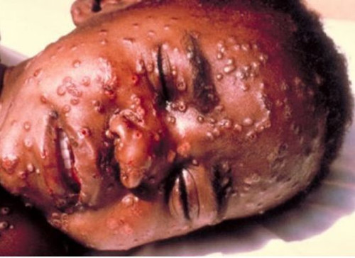

Le virus Ebola appartient à la famille des filovirus, qui regroupe des virus à l'apparence filamenteuse caractéristique. Des chauves-souris frugivores de la famille des ptéropodidés constituent vraisemblablement le réservoir naturel du virus, mais d'autres mammifères peuvent être infectés. Chez l'homme et les autres primates, il provoque la maladie à virus Ebola, et a causé plusieurs épidémies.
Le contact direct avec les liquides organiques (sang, vomi, diarrhée, sueur, salive…) d’une personne infectée est la principale voie de contamination interhumaine. Selon les conclusions de l'OMS à la date d'octobre 2014, les liquides les plus infectieux sont actuellement le sang, les selles et le vomi. Le virus ayant également été détecté dans le lait maternel et l’urine. La salive et les larmes peuvent également représenter un risque, bien que les données scientifiques ne soient actuellement pas concluantes selon l'OMS. Lorsque les chauves-souris frugivores sont particulièrement abondantes, comme à Abidjan, cet animal devient une source grave d'infection.
La maladie à virus Ebola se caractérise par une soudaine montée de fièvre accompagnée d'une fatigue physique, de douleurs musculaires, de céphalées ainsi que de maux de gorge. Débutent ensuite une diarrhée souvent sanglante (appelée « diarrhée rouge » en Afrique francophone), les vomissements, les éruptions cutanées et l’insuffisance rénale et hépatique. Des hémorragies internes et externes surviennent ensuite, suivies du décès par choc cardio-respiratoire dans 50 à 90 % des cas. Environs 16 000 personnes en sont décédées à travers le monde dont 7000 en Afrique de l'Ouest.

Particulièrement dangereux, ce virus ne doit être manipulé qu'au sein de laboratoires P4 (ou BSL-4), conçus pour prévenir les risques de contamination par accident ou à la suite d'actes de malveillance (bioterrorisme).

La maladie causée par le virus est fatale dans 20 % à 90 % des cas. Cette large différence est due au fait que le virus Ebola est particulièrement dangereux en Afrique, où les soins sont limités et difficiles à fournir aux populations. Si le virus ne dispose d'aucun traitement spécifique, de nombreux traitements symptomatiques (réanimation, réhydratation, transfusion...) peuvent permettre d'éviter le décès du patient.
Un vaccin vivant atténué expérimental donne des résultats encourageants chez le singe. Il a été administré en mars 2009 à une chercheuse travaillant sur le virus, après une possible contamination accidentelle. L'évolution en a été favorable.
D'autres pistes sont en cours d'exploration chez l'animal : utilisation d'une protéine inhibitrice d'un facteur de la coagulation ou inhibition de l'ARN polymérase virale par des ARN interférents. Un sérum, composé d'anticorps monoclonaux produits par des plants de tabac PGM appelé ZMapp de la firme américaine Mapp Biopharmaceutical, est administré avec succès, de façon expérimentale en août 2014, sur deux patients américains infectés. Et les États-Unis ont partiellement levé des restrictions sur un autre traitement expérimental de la société canadienne Tekmira, mais sa mise sur le marché pourrait prendre plusieurs mois. Les japonais ont eux aussi un traitement expérimental qui fonctionnerait sur le virus Ebola même 6 jours après infection et ce sur les souris, les tests sur les primates n'ont pas encore été faits et le Nigeria devrait bientôt recevoir un petit stock de ce produit utilisé pour traiter la grippe et qui fonctionne sur la Fièvre du Nil, la Fièvre Jaune et la Fièvre Aphteuse. La lamivudine, molécule anti-HIV disponible en quantité en Afrique, est en cours de test pour soigner Ebola
L’aide internationale consacrée à l’épidémie d’Ebola, qui fait actuellement rage en Afrique de l’Ouest, doit être renforcée de toute urgence. L’épidémie est toujours hors de contrôle et continuera de se propager si davantage de personnel et de moyens ne sont pas rapidement déployés.
Au Liberia et en Sierra Leone, le bilan continue de s’alourdir de façon dramatique. En Guinée, où l’épidémie a démarré, la situation n’est pas encore sous contrôle. Les autorités des quatre pays touchés – la Guinée, la Sierra Leone, le Libéria et le Nigéria – ont besoin du soutien d’autres pays et organisations. Des moyens financiers seuls ne suffisent pas : ces pays ont besoin de main d’œuvre et d’expertise.

Médecins sans frontières est à pied d’œuvre depuis mars et a atteint la limite de ses capacités. Nous gérons six cliniques Ebola dans trois pays et fournissons des conseils techniques aux autorités de quatre États.
Il n'existe pour le moment aucun traitement officiel pour contrer l'Ebola cependant les quelques tests effectués sont prometteurs. Les autorités essayent de contenir le virus dans les zones déjà contaminées et de minimiser les nouvelles infections.